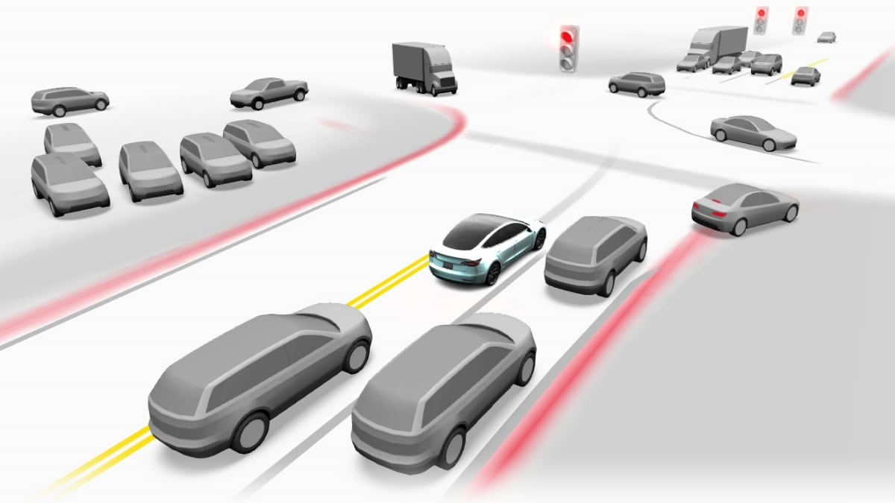

A camera-only perception experiment
Building a 3D Driving Scene: the why and how
An attempt to understand, design, train, and optimize a multi-camera 3D scene perception model from first principles.
Opening
I would like to preface that I am by no means an expert in the field of object perception and autonomous vehicles. However, I thought it would be interesting and invaluable to go through the diligent work of understanding the backbone of this field from first principles, reading the associated literature, and attempting to design, train, and optimize my own model for 3D scene generation.
The goal of the following project is to develop something akin to Tesla’s Full Self-Driving UI.

I became interested in the potential for high-performance edge scene generation capabilities in real time. The goal is to adapt a similar model for 3D scene generation on consumer-accessible hardware, in real time. I.e., using standard cameras, with standard vehicles, pedestrians, lanes, roads, and road boundaries as the output.
Why Did I Start This Project?
In first year, I was forced to commute to the University of Toronto via the QEW and Highway 403. My mind always drifted towards the potential for autonomous vehicles and their potential to eliminate my daily headache. The only challenge, in my consideration, would be the copious amounts of compute required to make a majority of cars capable of Level 3 or higher automated driving. The significant hardware constraints of the existing fleet, and the inviability of cloud compute due to latency, posed too significant a challenge to overcome.
For this very reason, I became motivated to research and learn more about the field of computer vision for robotics and the potential for on-device inference.
The principle and format for this detailed analysis follow the same fundamental principles as TinyTPU, where the focus of this project will be understanding from first principles and the fundamentals of the project itself.
Again, the aim is not to fully replicate Tesla’s Full Self-Driving platform, but to study the fundamental concepts of computer vision and potentially make something fun and cool.
A note on the traffic reference
The article linked in the report describes Toronto’s city-level driving-time ranking in the 2023 TomTom Traffic Index. It does not rank the QEW or Highway 403 individually.
Understanding Perception
At an extremely high level, we can reduce perception to data being input and data being output. For our scope, our only input modality is vision, which means that we will be required to infer the depth, orientation, and location of all objects with reference to the car, without any LiDAR information during inference. Thus, our model must be able to turn 2D projections into 3D semantic positioning in space.
The main obstruction is that a camera records a two-dimensional projection. A pixel tells us that something exists along a direction leaving the camera, but it does not directly tell us how far away that thing is. Our model must therefore learn both what it sees and where that thing exists in a shared three-dimensional space.
Building Our Understanding from the IPFormer Reference
A model architecture simply describes how information moves from the input to the final prediction. Each component receives some numerical representation, transforms it, and gives the result to the following component.
IPFormer gave me a reference for thinking about this process. Its task is panoptic scene completion: predicting occupied 3D space, its semantic class, and which individual object it belongs to. It lifts image context using depth probabilities, generates scene-dependent voxel and instance proposals, and refines their relationships through attention. Its final output is a voxel scene with semantic and instance labels.
To understand how this becomes possible, I wanted to begin with neurons, build up to image features, and then follow those features into a spatial representation and a final prediction. BEVFormer and VoxFormer help explain different choices along that path. Our own model then adapts these ideas to a smaller road-and-object representation.
1. Understanding neurons
A neuron is fundamentally a weighted mathematical function. It multiplies every input by a learned weight, adds a bias, and passes the result through an activation function.
A useful intuition is that each neuron acts as a small learned test. Early visual neurons may respond to edges or colour changes. Deeper layers combine these smaller patterns into wheels, windows, roads, and vehicle-like features.
The weights determine how strongly each input contributes. The bias shifts when the neuron responds, and the activation introduces nonlinearity. Without that nonlinearity, stacking weighted sums would still give us a single affine transformation. For example, ReLU keeps a positive value and replaces a negative value with zero. Training changes the weights and biases so that these responses become useful for the prediction.
inputs = [0.2, 0.8, 0.4]
weights = [0.5, -0.25, 1.0]
bias = 0.1
z = sum(w * x for w, x in zip(weights, inputs)) + bias
activation = max(0.0, z) # ReLU: this example gives 0.42. Understanding Convolutional Neural Networks
An RGB image is only an array of numbers with height, width, and three colour channels. A convolution moves a small learned filter across this array. Reusing the same filter allows the model to recognize a pattern regardless of where it appears.
At one image location, a 3 × 3 filter reads a small patch across the input channels, multiplies those values by its weights, and sums them. Repeating this operation across the image produces a feature map. Using several filters gives us several output channels, each containing a different learned response at every spatial location.
A channel is therefore not another camera, another depth plane, or necessarily a named object category. It is one coordinate in a learned feature description. The pattern that describes a car may be distributed across many channels. This is how an image can change from three colour channels into 128 feature channels while still retaining a two-dimensional spatial arrangement.
Stride determines how far the filter moves each time. A larger stride reduces the number of spatial positions. This saves computation and lets later features cover more of the original image, but a small pedestrian may now occupy only one or two feature locations. More channels cannot automatically restore positions that were lost through downsampling.
3. Understanding Residual Networks
Once we stack many layers, the model has to learn useful transformations through a long sequence of operations. A residual block adds its input back to the transformed output. The block can therefore learn a correction to a representation that already exists.
If the learned branch produces zero, the shortcut still passes the input forward. It also gives gradients a direct route through the addition. This makes deep networks easier to optimize, although it does not guarantee that training will succeed. The two branches must have compatible shapes; a projection shortcut can adjust channels and resolution when they change. This is the central construction in ResNet.
For our model, ImageNet pretraining provided the initial ResNet-50 weights. Those weights already encoded useful visual patterns, but they had not learned our camera geometry or our 3D output task. The backbone still had to work with the depth and detection components during training.
4. Understanding FPN
Our visual backbone used a pretrained ResNet-50. Its deeper stages produced stronger semantic features but at progressively lower spatial resolutions. We then used a Feature Pyramid Network to combine this semantic information with the finer spatial detail required for small and distant objects.
An FPN takes a coarse feature map, upsamples it to the resolution of an earlier stage, and combines it with a lateral projection of that earlier stage. A 1 × 1 convolution makes the channel dimensions compatible. The result is a pyramid of feature maps: the finer levels have access to information from deeper layers, while retaining their own spatial samples.
# Shapes below are [channels, height, width].
image = [3, 256, 704]
# ResNet stages: each position covers progressively more image context.
C3 = [512, 32, 88] # stride 8
C4 = [1024, 16, 44] # stride 16
C5 = [2048, 8, 22] # stride 32
# FPN combines scales and gives them a common channel width.
P3 = [128, 32, 88]
P4 = [128, 16, 44]
P5 = [128, 8, 22]5. Understanding BEVFormer
A feature map is still organized by image coordinates. A car seen by two cameras occupies two different image locations. A Bird’s-Eye-View, or BEV, representation gives us a shared ground-plane coordinate system so that both cameras can contribute evidence about the same physical location.
BEVFormer creates a learned query at each BEV grid position. A query is a feature vector used to retrieve relevant information. Spatial cross-attention projects reference points at different heights into the cameras and samples nearby image features. The query combines that evidence into a representation of its location.
Temporal self-attention also provides access to history BEV features, aligned using ego motion. This gives the current representation evidence from previous observations, which can help when an object is partly occluded. This attention-based BEV construction is a reference for understanding the task; our implementation constructs BEV using depth lifting and pooling instead.
6. Understanding BEV pooling
Each calibrated camera gives us a ray for every image location. If the model assigns depth d to pixel (u,v), the point can be projected into camera coordinates and then transformed into the vehicle coordinate system.
Here, K describes a pinhole camera’s intrinsics, while R and t rotate and translate from camera to vehicle coordinates. In this equation, d is depth along the camera’s optical axis. Our code instead uses calibrated unit rays and radial range: the camera point is the unit ray multiplied by its range. That distinction also allows the KITTI fisheye cameras to use their own calibrated rays.
Rather than producing one exact depth immediately, our model predicted a probability across 64 possible depth bins. Each image feature was weighted by these probabilities and pooled into a Bird’s-Eye-View grid.
This follows the central lifting idea in Lift, Splat, Shoot. At one feature location, we have a context vector and a probability for each possible depth. Multiplying them distributes the same visual evidence along the camera ray. A likely depth receives a stronger contribution than an unlikely depth.
We then transform each candidate point into vehicle coordinates, find its BEV cell, and accumulate its weighted context there. Evidence from different pixels and cameras can land in the same cell. Our implementation divides by accumulated probability mass when that mass exceeds one; it retains weaker evidence at sparsely supported cells. This pooling is different from simply shrinking an image: it groups features by their estimated physical location.
for camera, pixel in feature_locations:
context = context_features[camera, pixel]
for depth_bin in depth_bins:
weight = depth_probability[camera, pixel, depth_bin]
camera_point = unit_ray[camera, pixel] * depth_bin.range
ego_point = rotate(camera_point) + camera_translation
cell = ground_plane_cell(ego_point)
if valid(camera, pixel, cell):
bev[cell] += weight * context
mass[cell] += weight
bev = bev / maximum(mass, 1.0)In the actual implementation, these operations are batched and depth is processed in chunks. The model therefore avoids retaining the entire depth-by-image-by-channel feature volume at once.
7. Understanding BEV CNN
After pooling, the features have a shared spatial meaning. Neighbouring cells represent neighbouring areas around the car, so a convolution can now combine evidence on the ground plane. A group of nearby responses may support a vehicle, while a larger connected region may support a road.
Our pooled tensor has 64 channels on a 160 × 160 grid, with each cell covering 0.5 × 0.5 metres. The BEV encoder projects this to 128 channels and applies three residual blocks. Separate prediction heads read those features to classify road cells, score object centres, and predict box geometry. The channels can carry height-related information even though height is no longer a separate grid axis.
8. Understanding VoxFormer, VoxelProposalLayer, and geotemporal attention
A voxel is a small cell in a three-dimensional grid. Before spending attention on every voxel, we can use estimated depth to propose where visible surfaces are likely to exist. In VoxFormer, a class-agnostic proposal stage uses depth and occupancy correction to select sparse voxel queries. Those queries retrieve image features through deformable cross-attention. Mask tokens and self-attention then extend the representation to the remaining volume for semantic scene completion.
The important function behind the VoxelProposalLayer idea in my outline is selecting an initial set of spatial hypotheses. A voxel proposal refers to a volume cell, while an instance proposal represents a possible individual object. They provide different units for collecting evidence. Our repository performs object proposal generation in decode_proposals; it does not contain a class named VoxelProposalLayer.
In IPFormer, visibility guides scene-dependent proposal initialization, and instance features ultimately associate voxels with objects. Its reported setup uses forward-facing, non-temporal imagery. The temporal part of the explanation below is our project’s adaptation, with BEVFormer providing a separate temporal reference. IPFormer’s methodology describes the original voxel and instance pathway.
Applying it to our feature maps
Our BEV object head first produces likely centres and an initial box at each selected centre. Each proposal carries geometry and a learned feature vector. That vector becomes a query: a numerical description that can request additional evidence before the model commits to its final box.
Spatial sampling and residual prediction
For each proposed box, our refiner takes the centre and eight corners, projects them into each camera, and bilinearly samples the three FPN levels. Bilinear sampling combines the neighbouring feature values when a projected point lies between grid locations. Points outside a valid view are masked, so missing observations are not treated as useful evidence.
Attention compares the proposal’s query with keys made from the sampled features. The resulting weights determine how much of each value vector to combine. Multi-head attention lets several learned comparisons operate in parallel. The refined feature then predicts a residual: a correction to the box’s centre, size, orientation, and class scores.
points = [box.centre, *box.corners]
image_samples, valid = sample_fpn(project_to_cameras(points))
query = proposal_features + encode_geometry(box)
query = spatial_attention(query, image_samples, valid)
memory = align_past_proposals(history, current_ego_pose)
query = temporal_attention(query, memory)
delta = predict_box_correction(query)
new_centre = old_centre + delta.centre
new_size = old_size * exp(clamp(delta.log_size))
new_yaw = wrap_angle(old_yaw + delta.yaw)Temporal sampling
Previous observations can provide features that are weak or missing in the current view. Before using them, we align earlier boxes into the current vehicle coordinate system using the recorded poses. A time encoding tells the model how old the evidence is. We reject incompatible sequences, future timestamps, and history older than the permitted gap.
Our refiner can attend to proposals from up to three previous observations. Ego-motion alignment compensates for our own car’s movement; moving objects can still change position independently. Attention must learn which historical evidence is helpful, and a separate association step supplies persistent track IDs. The implemented network performs one late spatial-and-temporal refinement block per observation.
9. Final object scene
Once refinement is complete, the runtime filters confidence scores, suppresses overlapping duplicate detections, and associates observations across timestamps. The viewer uses the remaining boxes to place simplified vehicles and pedestrians, while road and sidewalk predictions provide the ground surfaces. The objects’ appearance is a rendering choice; their position, dimensions, and orientation come from the predictions.
In our first model, this means road geometry and oriented boxes. Lane detection was later deferred. In the IPFormer reference, the output is instead a completed voxel scene with semantic classes and instance identities.
10. Understanding how to design an architecture
I began to understand that training relies on how well you can move specific data around in the architecture and generate effective loss and comparison functions. The input, the output, and the information needed between them determine what each component must do. Useful data, supervision, and optimization are still necessary for that architecture to learn.
Input, output, and feature detection
For our input, we have camera images, calibration, timestamps, and vehicle poses. For our output, we want road surfaces and object geometry in the vehicle’s coordinate system. Feature detection is the bridge: the image encoder must preserve evidence about objects, and the geometric stages must place that evidence where the output heads can use it.
Passing data at each level: the tradeoff
The more we pool or downsample, the less spatial resolution we retain. When we want both high spatial resolution and useful feature descriptions, we need to combine information across levels. That explains the FPN, and it also explains why the refiner returns to the image feature maps after the initial BEV prediction.
Representation forms
This became one of the largest lessons throughout the project. The form in which information is represented determines both what the model can understand and how much computation it requires.
A full 3D voxel volume describes height, width, and depth everywhere, including the majority of locations containing nothing useful. A BEV representation collapses most vertical structure and reasons over a two-dimensional ground plane. A sparse representation goes further and spends its computation on a limited collection of likely objects.
Depending on the form in which we maintain our data, we can save a substantial amount of memory and computation. A dense feature volume stores X × Y × Z × C values. A BEV grid stores X × Y × C, while an image feature map stores H × W × C per camera. A sparse object representation stores a limited number of feature vectors and their geometry. The spatial meaning of these axes is different, even when two representations contain the same number of values.
As an illustration, 160 × 160 cells with 64 channels contain 1,638,400 values. Adding 16 explicit height layers gives 26,214,400 values, or sixteen times as many. This counts feature values only; it is not a measured runtime speedup. BEV sacrifices explicit vertical separation, while sparse objects omit much of the surrounding surface detail. My big learning here was that representation is a major tradeoff.
Refinement of prediction
Spatial sampling gives a proposal more evidence from the current images. Temporal sampling gives it evidence from earlier observations. The loss then compares the result with supervision, and backpropagation changes the weights along the available paths. Designing the architecture means making useful evidence available at the point where it can improve the prediction, while keeping the cost of those paths manageable.
Developing My First Model
The project eventually contained two separate data paths. The first complete experiment used four KITTI-360 cameras. I later adapted the pipeline to the six-camera nuScenes format so that I could compare our object detector with Sparse4Dv3. I report these experiments separately because their datasets and training states were different.
The first complete architecture moved data through a shared image backbone, predicted depth, pooled the camera evidence into BEV, and then generated road and object predictions.
- 01ImagesCalibrated camera observations resized to 704 × 256.
- 02ResNet + FPNVisual features at strides 8, 16, and 32.
- 03Depth lifting64 depth probabilities and 64 context channels projected into BEV.
- 04BEV encoderThree residual blocks reason over the shared ground plane.
- 05Prediction headsRoad classes and oriented 3D object proposals.
- 06RefinementCurrent image features and previous observations correct each proposal.
The object head predicted a centre, vertical position, dimensions, confidence, and yaw. The strongest 200 proposals could enter refinement, after which at most 100 detections were retained.
This follows the sequence in my initial outline: an ImageNet-pretrained ResNet-50, FPN, BEV projection, pooling and detection, followed by attention. “Looping attention” describes the refinement idea; the implemented baseline uses one spatial-and-temporal block, with detached history passed between observations. Repeated within-frame refinement would require a separate architecture change.
The tensor shapes, pooling rule, and refinement steps above can be traced in the model implementation and the baseline configuration.
Understanding Training
Training relies on generating a prediction, measuring how wrong it is, and determining how every weight contributed to that error. Gradient descent then makes a small update:
Our loss combined depth, road classification, object-centre, box geometry, and circular yaw errors. In effect, we were attempting to give the model the data and comparison functions required to make a better prediction.
We first attempted to overfit sixteen scenes. This was not evidence that the model generalized; it was a mechanical test that the images, labels, loss, gradients, and optimizer could work together. Only unseen validation and sealed testing could measure whether it had learned a useful pattern.
What Happened?
The four-camera KITTI-360 model ran, learned strong road structure, and produced a complete prediction-only replay. However, its object perception was not accurate enough to create the clean and faithful reconstruction initially imagined.
These are project-specific metrics from the preserved KITTI-360 held-out drive, not official benchmark leaderboard results. The pedestrian result in particular was inadequate. The replay also exposed implausible vehicle clusters, overlapping boxes, coarse road boundaries, and unstable arrangements between adjacent frames.
Rethinking the Architecture with Sparse4D
The first architecture assumed that a sufficiently useful BEV feature map would naturally provide strong object geometry. In practice, depth errors produced incorrect BEV features, weak centre proposals, and boxes that the later refinement stage could not recover.
This led me toward Sparse4Dv3 as a reference. Sparse in this context does not simply mean removing voxels. It means representing the scene with a limited collection of object hypotheses and concentrating expensive computation around them.
On a separate 403-timestamp nuScenes diagnostic, a complete pretrained Sparse4Dv3 checkpoint achieved 57.46% car BEV AP50, compared with 25.45% for our preserved early six-camera nuScenes baseline. Its matched yaw error was also lower: 4.67° compared with 13.56°. This was not an equal training comparison, but it demonstrated the gap between our first proposal mechanism and a mature pretrained sparse detector.
Understanding Performance
Rendering a UI at 60 FPS and producing 60 entirely new perception updates every second are not equivalent. A renderer can interpolate between slower perception updates, but the model has still only observed the world at the lower rate.
Our custom model approached 29 cached scene updates per second, while the stronger pretrained Sparse4Dv3 diagnostic processed approximately 13 scenes per second in FP32. Neither measurement established a complete live 60 FPS camera pipeline.
The actual design problem is a balance:
TensorRT can improve how the frozen model executes through lower precision, layer fusion, kernel selection, and memory planning. It does not improve what the model learned. The custom model’s depth pooling and rotated suppression require special attention because they cannot be treated as ordinary convolutional layers.
What I Learned
The largest lesson was that architecture design is largely the process of deciding what information should exist, how it should be represented, and where it must move. Every representation creates a tradeoff between accuracy, spatial detail, memory, and compute.
The first model helped me understand camera calibration, convolutional features, depth lifting, BEV construction, object losses, temporal refinement, and evaluation. Its failures then showed me why strong perception systems require careful data, proposal generation, pretrained features, and controlled testing.
If I continued this model, I would retain the calibrated multi-camera inputs and useful road representation while replacing the weak dense object proposal branch with a stronger sparse detector. I would optimize only after profiling the complete pathway and would measure every speed improvement against the same frozen accuracy evaluation.
The model did not approach Tesla’s perception capabilities. That was never the realistic measure of success. The purpose was to break apart an intimidating system, understand its components from first principles, build an actual implementation, and determine through evidence where my assumptions failed.
References
- IPFormer: Visual 3D Panoptic Scene Completion with Context-Adaptive Instance Proposals
- Deep Residual Learning for Image Recognition
- Feature Pyramid Networks for Object Detection
- Lift, Splat, Shoot
- BEVFormer: Learning Bird’s-Eye-View Representation from Multi-Camera Images via Spatiotemporal Transformers
- VoxFormer: Sparse Voxel Transformer for Camera-Based 3D Semantic Scene Completion
- Sparse4Dv3
- nuScenes 3D object-detection evaluation
- Project source and complete experiment evidence
AI-use disclosure. Codex was used to assist with implementation, experiment orchestration, debugging, evidence organization, and editing. Architectural decisions, project direction, and final claims were reviewed against the preserved source and experiment artifacts.